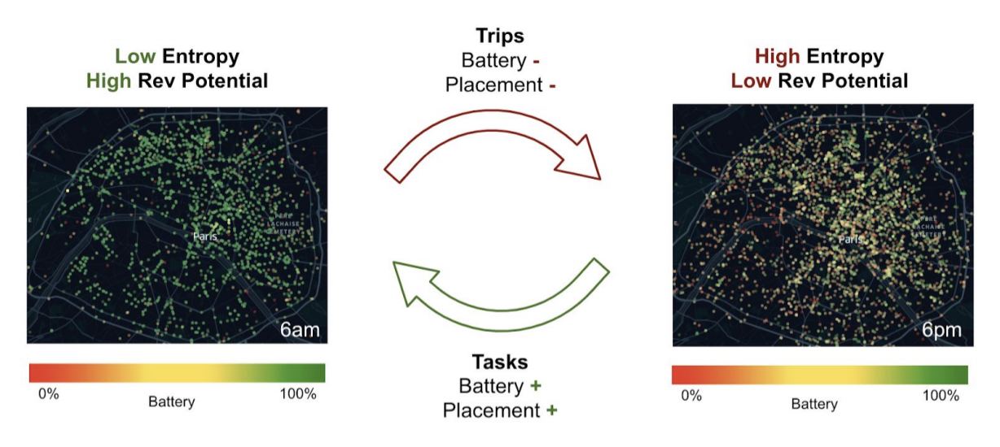
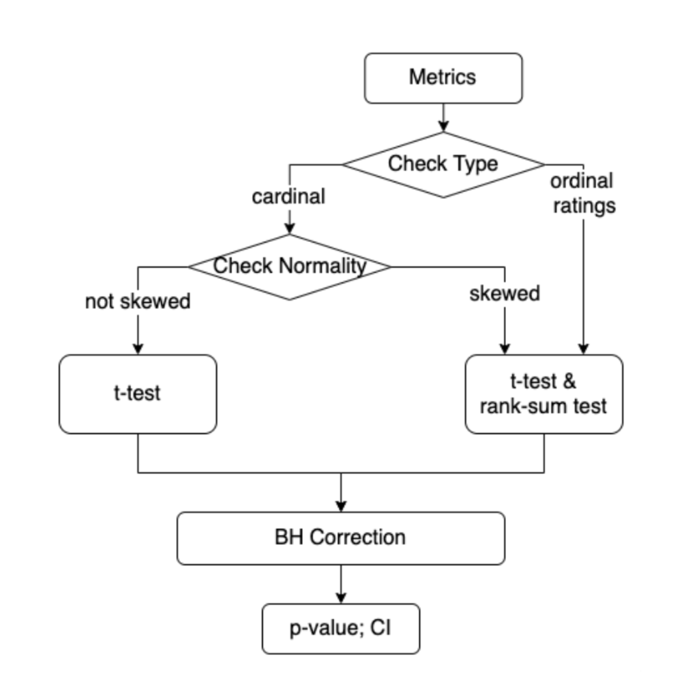
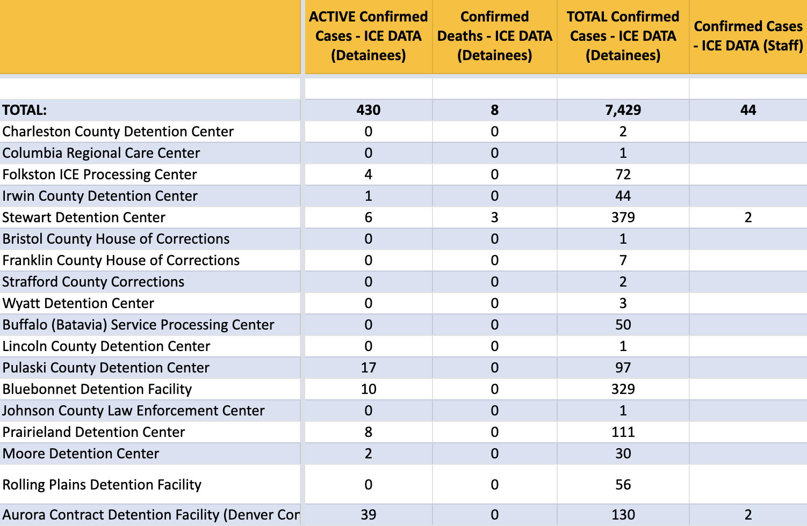
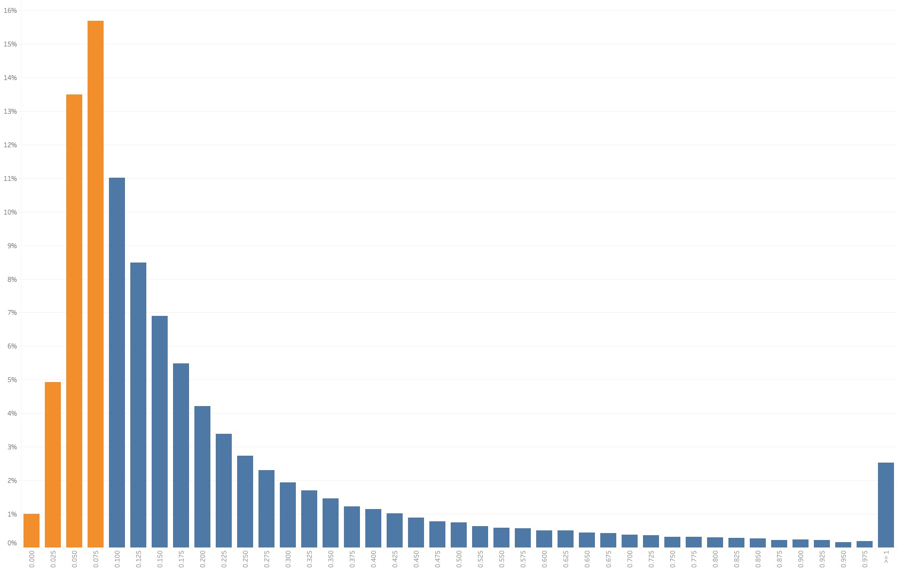
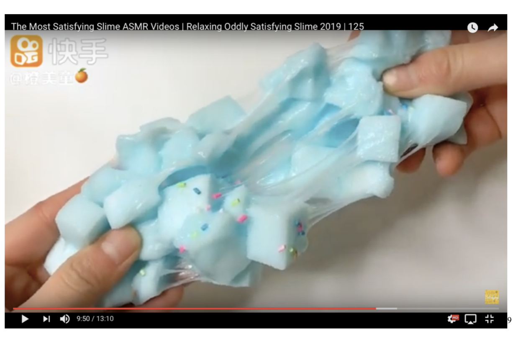
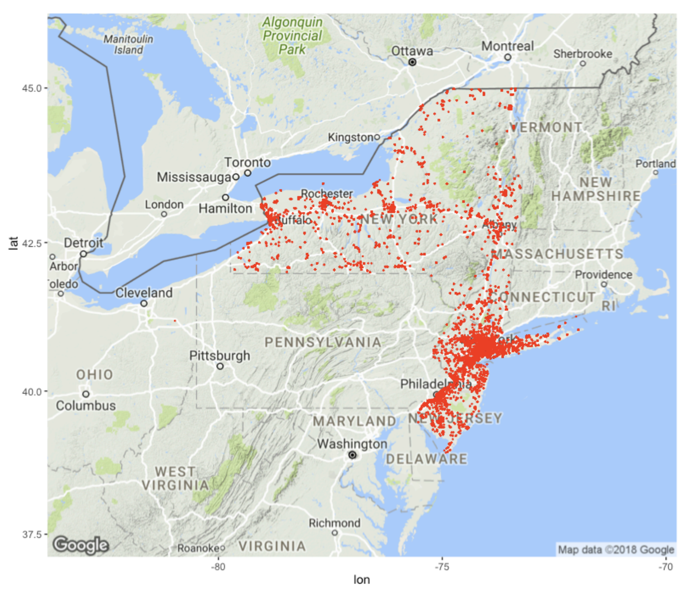
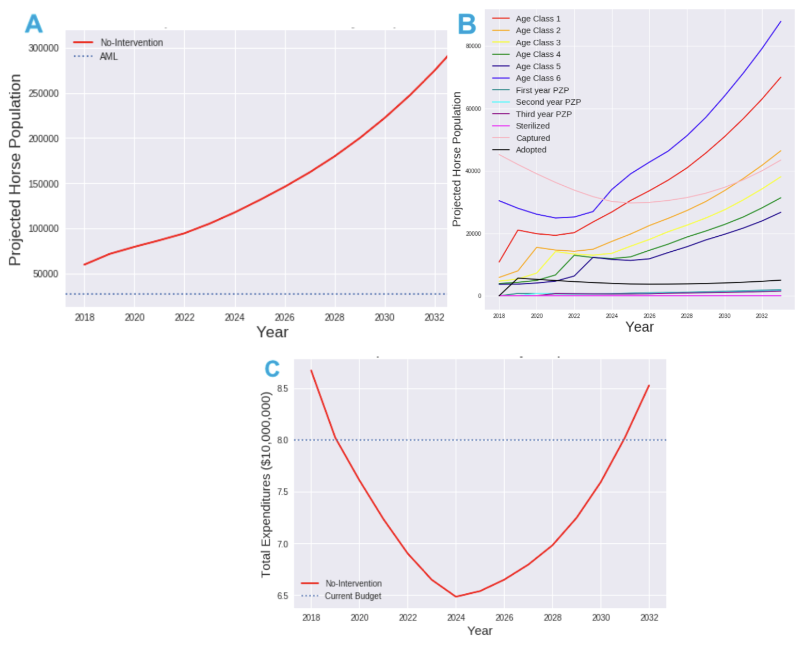
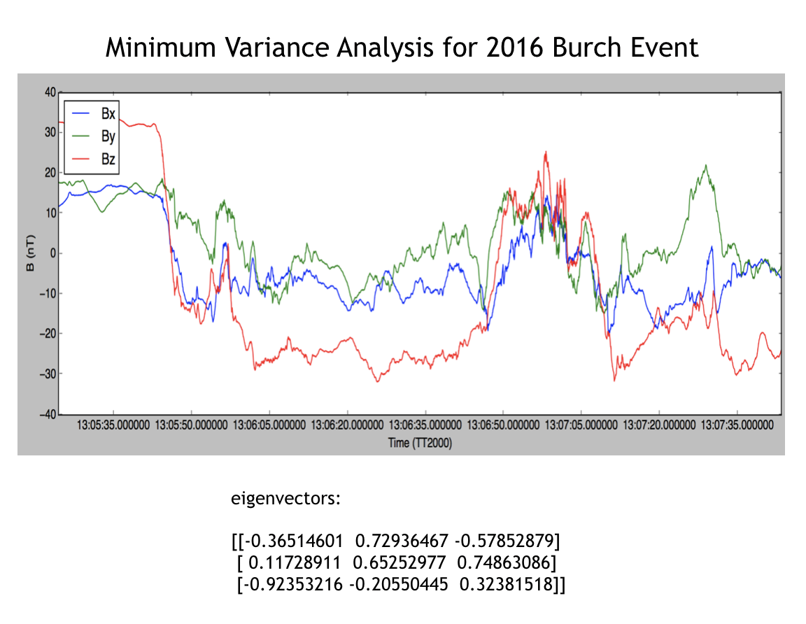

How can community members in a new scholarly field critically analyze their own research directions, shortcomings, and future prospects? In this work, our team uses reflexive, participatory mixed-methods to understand the borgeoning research topic known as Fairness, Accountability, and Transparency for Socio-technical Systems.
Artificial intelligence and machine learning technologies make it difficult to establish accountability. In a new paper, we discuss why accountability is important, which barriers exist, and what we can do about it.
High-impact machine learning algorithms, including algorithmic risk-assessments, are trained to predict or achieve some quantifiable metric. Examples include lowering criminal risk scores and recidivism rates. Are these goals the right goals?
Bike, scooter and moped sharing companies' biggest challenge is rider safety in car-dominated cities. To encourage riders to wear helmets, we built a computer vision model that can detect whether a rider is wearing a helmet in real time. We can use this feature to motivate helmet-wearing through discounts, the nudge effect, or strict requirement (in certain markets). We scraped images from Google, built a Convolutional Neural Network (CNN) using transferred learning with YOLOv4, and designed and implemented the UI for the Lime app. The model's classification accuracy on a test set was 97.55%.
1st place winner in Lime's company-wide Hackathon, December 2020.
With Bohan Zhang, Jianfeng Hu, Nick Dulchin, Adrian Luan, Renjing Yin and Kunmiao Yang @ Lime
Lightweight dockless vehicles are deployed at full battery in the highest-demand locations. Throughout the day, trips bring them to a lower-trip-potential state. When and where should Lime pick up vehicles to complete charging and rebalancing tasks?
Project lifted Lime's overall [revenue-task cost] by an estimated 3.9%.

Feedback Effects in Repeated Criminal Decisions
Algorithmic risk assessment tools are widely used in the United States today to assist pre-trial and sentencing decisions. Current auditing methods are limited in scope, do not have standardized procedures, and (importantly) ignore feedback effects that arise from repeated decision-making. How do we create accountability?
Swappable Battery Technology for E-vehicle Sharing Systems
Lime recently launched their first electric vehicles with swappable batteries, so that people do not have to bring vehicles to power sources in order to charge them. How much closer will this technology bring us to zero-carbon travel?
Supporting randomized A/B tests is fun but the work gets repetitve. I created an automated tool that performs relevant statistical hypothesis tests and reports treatment effects for a number of metrics. The tool supports randomized A/B tests on the vehicle, user, juicer, and switchback (region-day) levels. This was a "10x" project - it enabled much more experiment support and allowed local teams to launch their own experiments.
To A/B or not to A/B? Lime supports hundreds of randomized A/B tests. It also supports causal impact studies and offline analyses when A/B tests are improper. I helped create briefs on how to design experiments and how to report and interpret experiment results.
with Kamya Jaggadish, Tristan Taru, Dounan Tang, Jeh Lokhande, and Siyi Luo @ LimeArticle

ICE Spreads COVID
People who spend time in Immigration Detention Facilities are becoming infected with COVID-19. ICE reports case and death counts, but also has transferred or released people with the infection. With UCLA's COVID Behind Bars Research Group, I worked to combine scraped ICE counts with transfer and release information, and systematically report these numbers for open-source research.
With Ishan Nagpal, Theresa Chang, and Sharon Dolovich @ UCLA COVID Behind Bars Data ProjectProject Website

Computer Vision for Parking Compliance
When riders finish a ride or employees deploy a fresh scooter, they take a photo of the parking job. Cities need proper vehicle parking so that scooters are not in pedestrians' way. Using our giant photo dataset, we trained and deployed a machine learning model (CNN) to identify improper parking.
Most models at Lime use region-wide, 3-week historical averages to estimate a vehicle's revenue for the next day. We can reduce error by training an ML model with a few additional pieces of information (weather, vehicle model, seasonal trend, location, and auto-regressive terms).
A lawsuit led to the public release of hundreds of thousands of previously unreported complaints against NYPD officers. A friend and I fast-followed with some stats and basic findings on Twitter.
When Twitter Trends Trend: Self-Referential Topics and Internet Virality
Amid widespread BLM protests in 2020, many took to social media for "Blackout Tuesday" - a day where they posted only a black square. This event spurred significant debate not about any underlying political issue but about the squares themselves. A defining feature of the Internet is its self-referentiality. When are Twitter trends about events, and when do they become about the fact of their own trending status? I am getting familiar with the Twitter API using this topic as my guide.
Personal project

Compounding Injustice: History & Prediction in Carceral Decision Making
Senior thesis project at Princeton. I wrote on pre-trial and sentencing decisions in the U.S. criminal legal system. I used a combination of an original dataset (court dockets scraped from the Philadelphia court system), modelling techniques, and critical analysis to explore compounding feedback effects in the criminal decision process. The work won three graduation honors:
(1) Best undergraduate thesis in Urban Studies [announcement1, announcement2]
(2) Kenneth H. Condit Graduation Prize for Excellence in Scholarship and Community Impact [announcement]
(3) Departmental Distinction
Senior Thesis Advised by Miklos Racz and Eduardo Morales @ Princeton ArXiv
Ruminations on Media & Sensation
Gelato shaped like a flower. Slime videos. ASMR. How is the Internet changing the way we sense?
Project stemming from coursework, advised by Thomas Y. Levin @ Princeton Paper

Recursion and Gothic Architecture
Much of gothic architecture was built before computers existed. However, gothic structures exhibit self-similarity on different scales. Mathematicians and Computer Scientists describe this as "fractal" or adhering to "recursive logic." Using just a few lines of code, I design relatively ornate elements of a cathedral.
The National Center for Access to Justice (NCAJ) created the Justice Index, a quantifiable metric to track state civil legal initiatives and hold government accountable, a la Eviction Lab. Which states perform better than other states, and why? How do these metrics correlate with partisan state leanings, income level, and other census information?
Inspectors visit facilities to check Clean Air Act (CAA) Compliance either periodically or at random. Using public air quality data and historical performance, can an algorithm do better?
Research advised by Elahesadat Naghib and Robert Vanderbei @ Princeton and Daniel Teitelbaum @ EPAPaper

Controlling Horse Populations in the Western United States
Feral horse populations are exploding, and the Bureau of Land Management refrains from culling because of its unpopularity. Instead, they gather large number of horses and keep them in barns. From a population dynamics perspective, we find that the current strategy is inadequate and simulate the impacts of a number of proposed alternatives.
Research project stemming from coursework, advised by Simon Levin @ Princeton Paper

Statistical Methods for Detecting Magnetic Reconnection Events using NASA Spacecraft Data
During an 8-month research assistantship at Princeton Plasma Physics Laboratory under Dr. Masaaki Yamada, I implemented a minimum variance analysis (MVA) technique to detect magnetic reconnection events in space. This work calibrated magnetic recordings from the four spacecraft launched by NASA's Magnetospheric Multiscale Mission. From the data I identified ~30 candidates as likely reconnection events, which were further analyzed by the lab. Understanding reconnection is a key part of developing nuclear fusion energy here on earth.
Research conducted with Amanda Brown. Advised by Masaaki Yamada @ PPPL, 2016-2017
